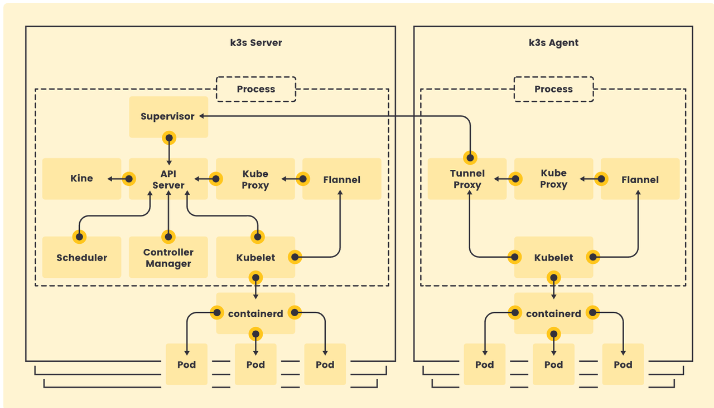
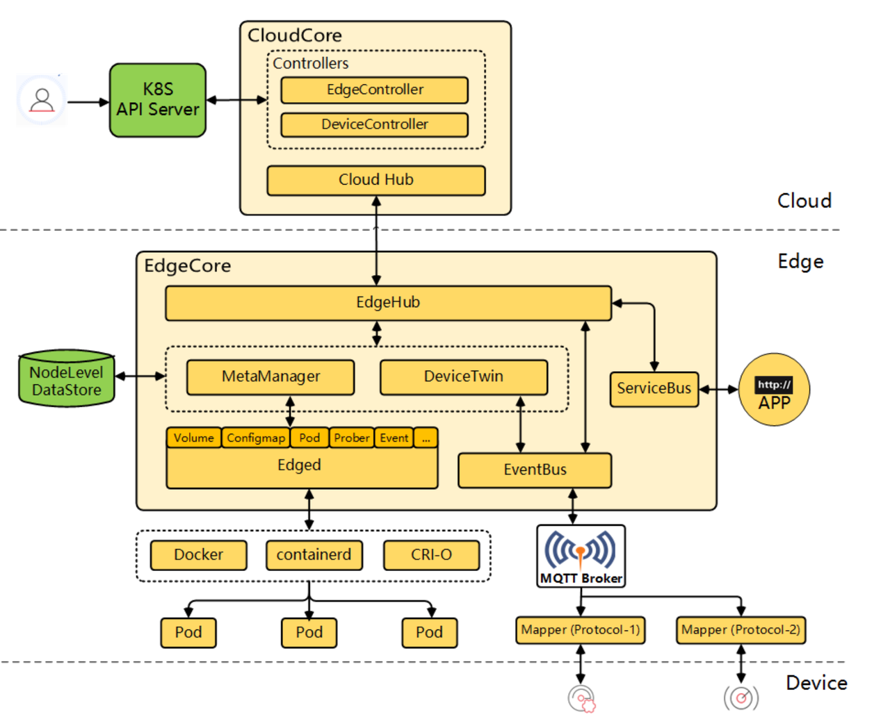
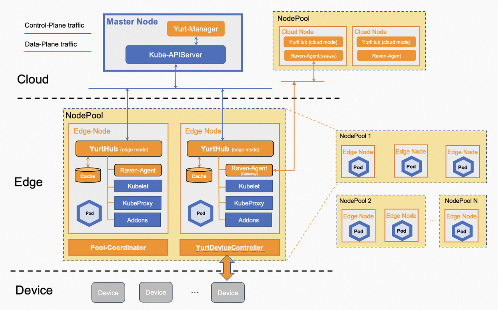
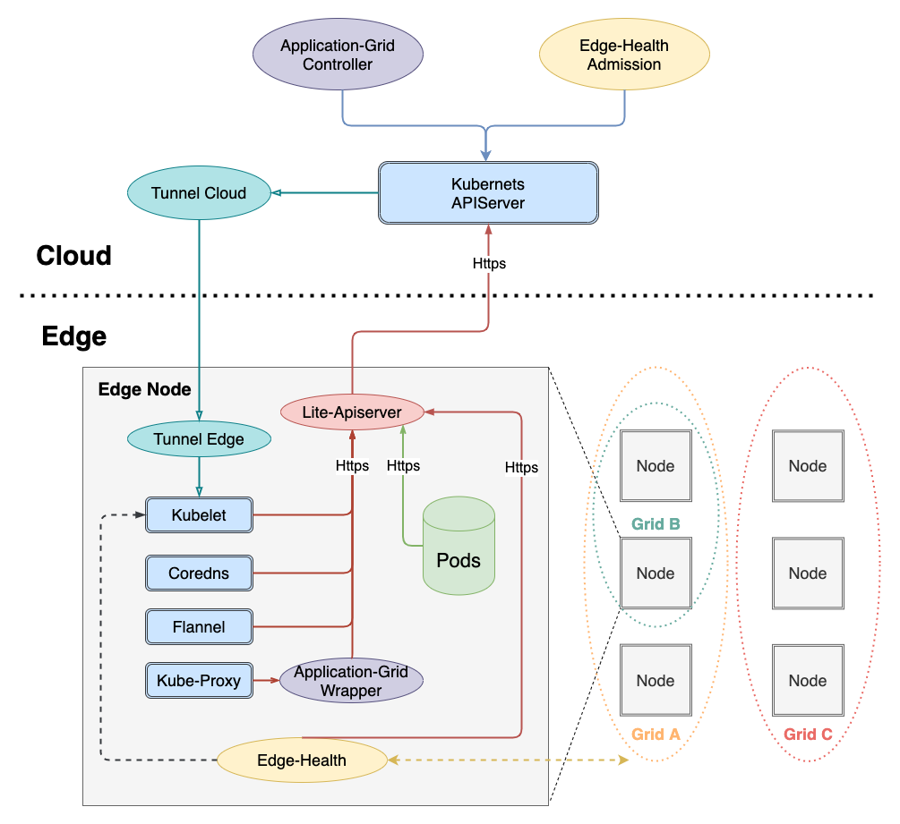
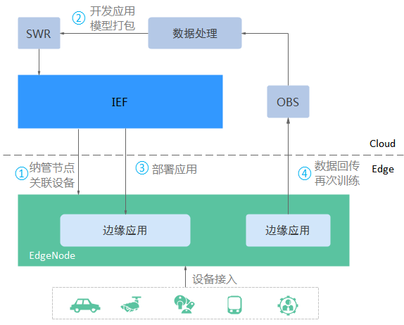

需求分析
用户需求
园区-工厂的网络、硬件存在特殊性，用户需要利用存量的硬件完成应用的自动部署+灰度部署，保障稳定性：
弱网自治：工厂与集团网络发生异常，工厂不停工，即用户部署的应用要在工厂的内部硬件和网络正常运作。
应用部署管理：实现应用版本的一键发布，同时支持单个工厂粒度的版本灰度。
流量工厂内部闭环：前期因硬件资源问题，保证工厂的应用、流量访问都在工厂内部的硬件和网络上。后期可扩展支持园区流量打散。
可观测性：支持通过平台UI查询日志、监控数据。
非功能性需求
主要如下几方面的考量：
架构延展性：未来是否有跨工厂流量打通、故障转移等架构诉求。
技术难度：主要考虑架构的简洁性，所增加的学习、部署、运维的成本。
开发成本：主要考虑实现的周期、投入的人力、性价比。
技术选型
开源方案
K3s
K3s是CNCF sandbox项目，最新的版本是v1.29.1+k3s2，基于标准K8s发行版的裁剪版本。
轻量级的K8s，Agent端和Server端通过小于100MB的二进制文件部署。Agent端和Server端通过Websocket（客户端负载均衡）进行连接。
核心组件
主要概念
Server端是标准的Kubernetes，意味着在应用部署层面，可以无缝兼容任何基于K8s API的上层管理的控制台，例如Rancher等开源项目或者是自研的HDS平台。
Agent端对K8s的节点功能代码进行了一些裁剪，例如LoadBalancer Service的Provider和Storage Drivers
等功能。Agent端目前只需要运行时（Kubelet+Containerd）、CNI（KubeProxy+Flannel）、七层负载均衡（Traefik Ingress Controller），因园区及工厂缺乏F5等SLB设备，无法为客户端访问内部服务提供统一的VIP做高可用，可以考虑使用Keepalive等组件提供局域网内部可访问的VIP。Keepalive+Haproxy的方案Cluster Load Balancer，可供参考。
KubeEdge
KubeEdge是CNCF incubating项目，是专门为边缘计算中云、边、端协同的场景而生。支持 MQTT 协议，实现边缘节点与边缘设备的通信。目前最新的版本是v1.16.0。
核心组件

主要概念
KubeEdge在边缘设备的管理和通信更有优势。通过Device Model+Device两个CRD对象来管理设备，通过EventBus实现基于MQTT主题的发布/订阅，通过Mapper实现对设备的消息管理。
KubeEdge涉及到的组件较多，尤其是关于IOT设备的管理，逻辑复杂，本次需求不涉及。
KubeEdge官方文档维护较差，学习成本较高。
OpenYurt
阿里开源方案
OpenYurt是CNCF sandbox项目，目前最新的版本是v1.4.1。
OpenYurt 支持最高版本为 1.23 的 Kubernetes 。使用更高版本的 Kubernetes 可能会导致兼容性问题。
核心组件

主要概念
OpenYurt可以提供在弱网环境下边缘节点的自治能力，通过添加缓存，防止边缘节点的Pod被原生控制器驱逐。并且提供NodePool来管理不同局域网下的节点，并结合CNI网络插件通过Raven提供跨NodePool的通信能力。支持边缘设备管理和通信。
OpenYurt使用节点池根据地域、网络、架构等属性对节点进行分组，使用YurtAppSet自定义资源实现同一应用不同节点池的重复性+差异化的实例部署，简化同一应用在不同节点池的运维部署工作。支持Service流量转发在节点池内流量闭环。
OpenYurt关于设备管理以及弱网的自治能力设计组件较多，逻辑复杂，并且K8s的版本支持到1.23。
SupperEdge
腾讯开源方案，最新版本v0.8.0，于2022年7月29日发布。与OpenYurt方案雷同，但成熟度低于OpenYurt。
核心组件

主要概念
WasmEdge
WasmEdge是CNCF的sandbox项目，目前最新的版本是0.13.5。
主要概念
WasmEdge 是用于云原生和边缘计算应用程序的“无服务器”运行时。它允许开发人员安全地将第三方或“本机”功能嵌入到主机应用程序或分布式计算框架中。
WasmEdge只是一个轻量级高性能易扩展的运行时，不包含部署分发的相关流程，而且需要将应用程序打包成wasm格式的文件，对C、Go、Rust支持较好，对
Java的支持较差。
公有云
ACK Edge
基于OpenYurt的能力，在云上提供边缘部署的能力。
IEF

基于KubeEdge的能力，在云上提供边缘部署能力。
核心组件
可参考KubeEdge的核心组件。
约束与限制
操作系统语言必须切换至英文。
Docker版本必须高于17.06，且cGroupfs=1。
glibc > 1.27。
开通8883端口。
青岛地区未开通服务，可使用北京地区。
结论
本次不涉及到边缘设备相关需求，仅关注应用部署管理、网络访问隔离、弱网自治能力等核心功能。
| 用户需求匹配度 | 非功能性需求 | ||||||||
| 部署管理 | 弱网自治 | 网络控制 | 可观测性 | 架构延展性 | 成熟度 | 技术难度 | 开发成本 | ||
| K3s | k3s | 低 | 低，需要搭建多个K3s集群 | 低，自行隔离 | 低 | 高 | 高，CNCF认证的轻量级K8s发行版，Github Star 26k | 中 | 中 |
| OpenYurt | 开源版本 | 高 | 高 | 高 | 低 | 高 | 低，CNCF Sandbox，Github Star 1.6k | 高 | 高 |
| ACK Edge | 高 | 高 | 中 | 高，成熟产品SLA保障 | 低，云上产品 | 低 | |||
| KubeEdge | 开源版本 | 中，官方文档不清晰 | 高 | 低，自行隔离 | 低 | 高 | 中，CNCF Incubating，Github Star 6.3k | 高 | 高 |
| IEF | 低，自行隔离 | 高 | 中 | 高，成熟产品SLA保障 | 低，云上产品 | 中 |
建议选用OpenYurt作为边缘管理的技术选型，以复用其强大的应用部署、弱网自治、流量访问闭环的能力。
选用方案设计
部署架构
方案选择
边缘集群的部署粒度目前可行的方案：
- 远端控制面
控制面部署在青岛机房，各工厂服务器以边缘节点的身份加入。
优点：将更多功能放在可自控的青岛机房，降低对园区、工厂硬件依赖，减少开发+实施难度，降低运维成本。
缺点：云端协同，需要打通青岛机房与各工厂的网络，控制面失联，端需要有自治能力。
- 园区控制面
控制面部署在园区的核心机房，各工厂服务器作为边缘节点加入对应园区的控制面。
优点：园区网络相对稳定，集群控制面分散，减少外部网络对集群的影响。
缺点：多个控制面，需借助karmada或者平台应用自行处理批量发版；依赖园区核心机房设施；需打通核心机房与各工厂的网络。
- 工厂控制面
每个工厂一个集群
优点：只打通青岛机房到工厂集群的部分网络即可；工厂内自治。
缺点：部分工厂节点不足3台，无法高可用；集群数量过多，开发、实施、运维的难度增大。
参考公有云的云边端架构，建议采用1方案：远端控制面。
组件部署
搭建全新的K8s集群，作为边缘部署的控制面。有一些特殊的配置，例如需要关掉NodeLifeCycle的Controller。
部署OpenYurt的Cloud端组件：Yurt-Manager。
打通工厂与青岛机房的网络，将工厂节点作为边缘节点加入到集群中。
部署方案
概述
多个K3s建立起来之后，需要通过HDS平台统一为用户提供应用部署管理的功能。
节点管理
按照工厂的维度划分节点池，将同一工厂的节点放在同一节点池中，便于统一的应用部署管理。
应用部署
批量部署
利用YurtAppSet的部署能力，通过模版+个性化节点池配置实现同一个应用使用相同的Deployment实现各工厂的资源部署。
应用灰度
通过修改YurtAppSet中各个节点池的个性化配置，实现应用在单个工厂的灰度发布。
服务访问
外部访问
如果是园区部署，每个边缘节点一个实例，园区工厂的流量分散到各个边缘节点，建议通过Keepalive绑定一个VIP（申请一个园区工厂均可访问的地址专用），便于在边缘节点上漂移。
该举措会增加如下风险：
被选中为VIP的边缘节点网络流量会大幅度增加（作为承接整个园区流量的入口）。
因为边缘节点上存在数据库，流量打散访问可能会导致某些服务器的资源消耗增加，争用数据库节点资源。
额外部署的Keepalive（+Traefik?是否需要七层能力）会增加资源消耗。
需要打通不同工厂间（工厂防火墙）应用的网络。
如果是工厂部署，新工厂可联合大运维使用大运维在数据库上的VIP进行统一访问。
使用VIP/节点IP + NodePort的方式打通集群内外网络访问。
流量闭环
目前因资源问题，维持现状，工厂之间的流量互相隔离，即工厂只访问自身边缘节点的服务。
详述（待测试）
暂时无法在办公平台文档外展示此内容
节点管理
边缘节点接入集群后，创建节点池的资源文件，将节点按照所属工厂进行分组。
1 | apiVersion: apps.openyurt.io/v1beta1 |
为每个需要加入该节点池的节点，添加标记。
1 | kubectl label node node-name apps.openyurt.io/nodepool=factory-name |
应用部署
1 | apiVersion: apps.openyurt.io/v1alpha1 |
服务访问
在每个边缘节点上部署internal ingress nginx controller，通过NodePort对外暴露其访问端口。应用通过定义Service+ingress将服务通过负载均衡暴露出去。
1 | apiVersion: v1 |
流量闭环功能支持从集群内部访问Service，只访问到同一节点池中的后端实例。如果直接使用NodePort Service访问应用可能达不到此效果，可能需要部署一个internal ingress nginx controller来实现此能力。
可观测性
用户需要在HDS平台上查看所部署应用的监控&日志数据，因此需要一个集中式的监控&日志存储。可在青岛机房搭建统一的ES&Prometheus存储，用作边缘组件的日志收集和监控数据采集。
日志
复用目前K8s集群的日志采集方案，在边缘端部署filebeat采集边缘节点上的组件日志，上报至青岛机房的ES存储。
监控
复用目前K8s集群的Exporter采集方案，在边缘端部署Exporter采集边缘节点上的组件监控数据，上报至青岛机房的Prometheus存储。